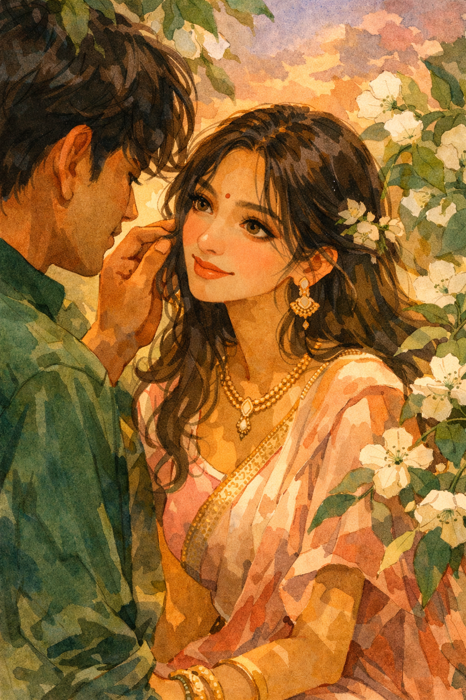
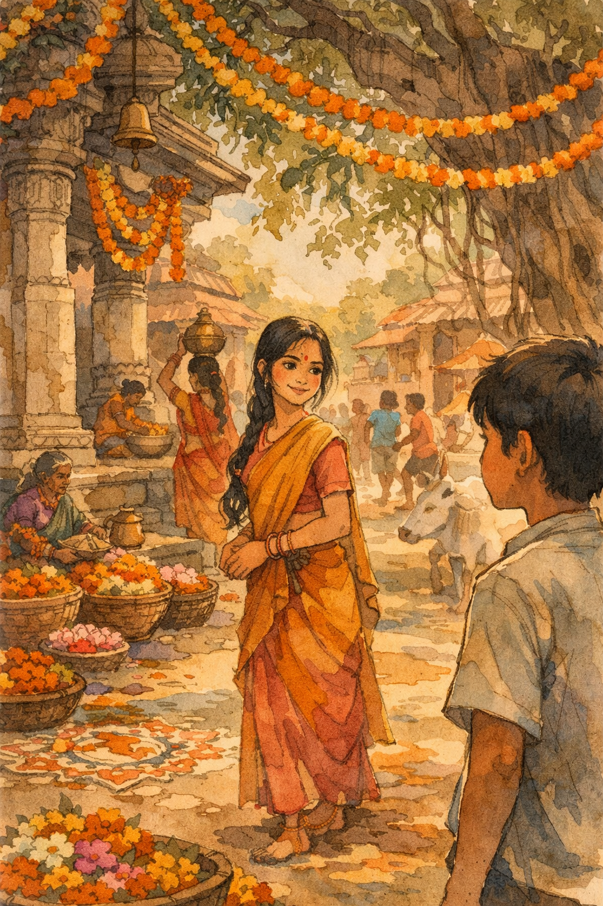
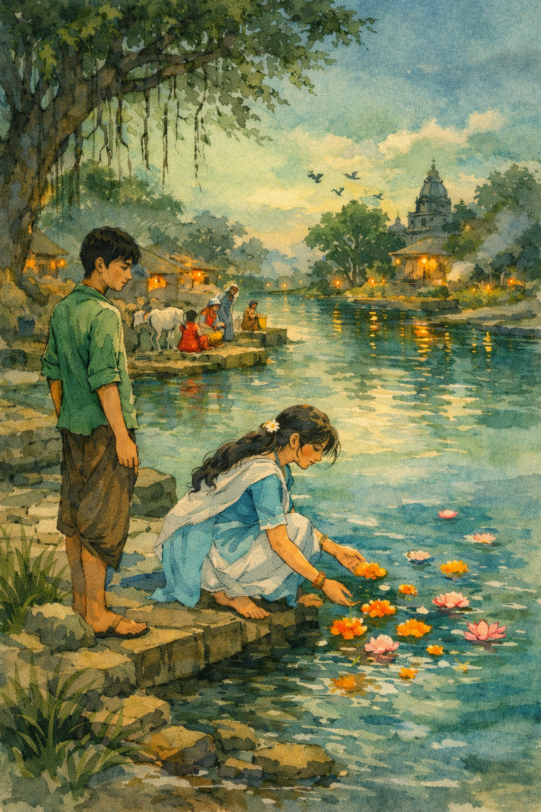
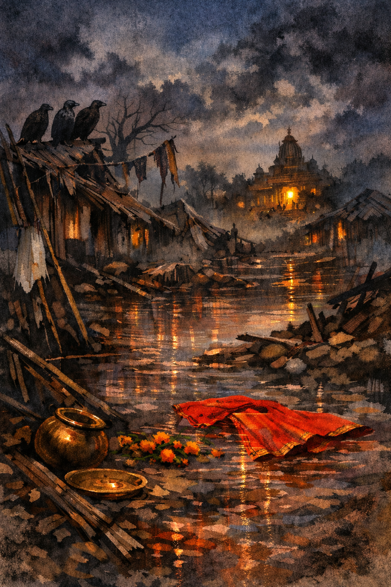
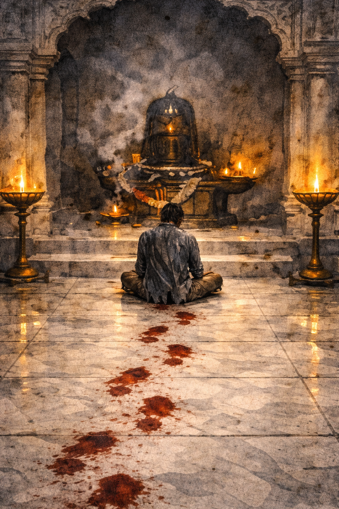

4 min read
CW: psychological distress
When I got out of the well, the first thing I understood was that survival can be its own kind of punishment.
My wife was there. My children were there. My parents too. I will not speak of the condition in which I found them. Let the storm keep that much for itself. I saw enough. Enough for my stomach to drop. Enough for my breath to stop halfway. Enough to know, all at once and without appeal, that everything I had ever loved in this world had ended in a single night. There was no one left for me to call to. No one left who would answer if I spoke. No house. No family. No future I could still walk toward. Only me. Only wreckage. Only that terrible silence that comes when even grief has not yet found the strength to cry.
Not even the birds were making sound.
It was close to midnight, but the whole village felt older than time, as though life itself had stepped back from it. And there, through the rain and broken dark, I saw the Shiva temple still holding light. A weak yellow light through the doorway. Incense still burning. I do not know who had lit it or why the storm had spared it. I only know that when every bond in the world had been cut at once, that one small light did not look like hope. It looked like the last witness left to my life.
The skin on my hands had gone white and soft from twelve hours in the water, and when I pulled myself up it peeled back in strips. I had nothing on my feet. Every step through the village opened me more: nails, broken tile, bamboo, tin, splintered wood. By the time I reached the temple, I was leaving blood behind me. I went there like the last thing the storm had refused to finish. I climbed the steps and crossed the marble floor. Red marks opened behind me with every step. I pushed the inner door, sat down cross-legged before the shivling, and faced my God as a man already half erased. I was twenty-four years old, and already the world had finished with me.
Sitting there, with hunger in my belly and the smell of death still clinging to the air, my mind went back to the first place my heart had ever been caught.

I must have been twelve when I first saw Ana. I remember her eyes before I remember her face, and her smile before I remember her voice. Something in me moved toward her before I knew what that movement was. If she looked at me, the whole day brightened. If she did not, the whole day soured. Soon everything in me began arranging itself around her. I wanted her laughter, her attention, her time. I wanted to be the one she turned toward first. I wanted to feel chosen by her in some final and unquestionable way. At that age I thought such wanting was the purest form of love. I did not yet know that the heart can cling before it learns how to care.
I remember one afternoon I saw her with another boy, laughing over something small, standing close in the easy way of people who are not thinking about being watched. I did not speak to her for days after that. At the time I called it hurt. Now I know it was wounded possession. I could not bear that her joy had happened outside me. I wanted all of her happiness to pass through me, to depend on me, to confirm me. Even then, before I had words for it, I was trying to turn wonder into ownership.
For a long time I lived inside that fever. Every part of me leaned toward her. I wanted her to choose me. I wanted her to see me above everyone else. A few years later, during festival season, I entered a tribal dance competition because I knew she would be there. I practiced with all the seriousness of someone trying to turn effort into destiny. She tried to help me. She laughed, corrected me, told me not to make everything so heavy. But I was too proud in my wanting. I did not want her help as much as I wanted her admiration. I wanted to be seen, favored, selected. I thought if I wanted hard enough, suffered hard enough, insisted hard enough, the world would one day reward me.
At the end of that season, I asked her to be with me forever. Not with humility. Not with understanding. I asked with the full force of a young man who believed intensity itself was proof. Beneath every word was the same hidden demand: stay with me, belong to me, make my world whole.
But life is merciless in the right ways. She did not want the same thing in the same way. I saw it before she even said it clearly. My heart dropped so hard it felt as though something inside me had been cut loose. Yet what surprised me was that the feeling did not die. It changed.
We became friends, or something close enough for the world to call it that. For some time I remained hurt. I still wanted more. I still carried the ache of not being fully chosen. But slowly, without any great vow, my heart began to alter its shape. I stopped asking how I could keep her. I started asking what it meant to love her well. I wanted her to be safe. I wanted her to be at peace. I wanted her life to be kind to her, even in places where I was not the center of it. The fist inside me was loosening, though not all at once and not without shame.
She was not perfect. She could be careless. She could withdraw. She could hurt me and not always understand the weight of it. There were moments when the old hunger rose in me and asked for proof, for reassurance, for something to hold. But something larger than my injury had begun to grow. I could feel that love was changing its center. It was no longer about what I could get from her. It was becoming about what I could give without poisoning it with claim.
I began to see that loving another person is not the same as reducing them to your need. To love someone truly is to honor their reality, even when that reality does not arrange itself around your comfort. I had once wanted to keep her. Now I wanted, more than anything, not to diminish her by giving her my affection.
And one day, without warning, the old sentence reversed itself within me. I no longer needed her to belong to me. It became enough that I belonged, in whatever measure life allowed, to what was best in her and best in me. What had begun in hunger had passed through humiliation and become something steadier, quieter, more difficult. Not possession. Not claim. Not the panic of wanting to be chosen at any cost. Something gentler than that. Something that could remain even when it could not rule.
After that, life grew quiet in the best way. We married when I was twenty-three. We had a child. We had a home. Work in the day. Food at night. Shared tiredness. Shared laughter. The small ordinary happiness people never think to worship until it is gone. I had once thought love meant fever. Later I learned it also means repetition without resentment, care without witness, and the daily decision to remain gentle with what has already become part of your soul.
Then the storm came.
I do not remember all of it. Only the sound at first a sound so large it no longer seemed like weather. Wind screaming through the dark like something alive. Walls shaking. Timber cracking. The house turning strange around us. I remember shouting. I remember trying to reach them. I remember being thrown. Then water. Stone. Darkness. The well.
What happened after that belongs more to the storm than to me.

And yet, now that I sit before Shiva with my blood drying on temple marble, I can see that the storm did not only take my family. It revealed me to myself. Even after I saw the dead, even after I knew the world I belonged to had ended, still I crawled toward shelter. Still I walked toward light. Still I wanted one more breath, one more hour, one more chance to remain. The same instinct that had once clung to a girl now clung to life itself. I had not only wanted love. I had wanted continuance. I had wanted tomorrow. I had wanted my name to keep moving through the mouths of others. I had wanted to stay.
That too was a form of clinging.
I see it clearly now. I was not only attached to her. I was attached to everything to being a husband, a father, a son, a man expected tomorrow. I clung to life the way I once clung to love, as if holding tighter could make it stay. I called that devotion because I was afraid. But fear only grasps. Fear only bargains. Fear says: let me keep what I cannot bear to lose.
Love does something harder.
Love opens its hand.
That is what she taught me long before I knew I was still learning from her. First I wanted to possess her. Then I wanted her peace. First I wanted love to confirm me. Then I wanted love to become worthy of itself. And now, before God, the same lesson returns in its final form. First I wanted life. I wanted breath, future, shelter, my own place among the living. I wanted not to be taken. But now, with the village broken behind me and hunger slowly hollowing me from within, I see that loving life is not the same as clinging to it. To cling is to fear its ending. To love is to let it be what it is, even when it leaves. To cling is to say: remain mine. To love is to say: I am grateful you were ever given at all.
I do not ask God for explanation now. I do not ask for rescue. I do not even know what rescue would mean. What would I be saved into? The house is gone. My wife is gone. My child is gone. My parents are gone. The voices that once made me a man have been taken out of the air. There is nothing left for me to possess, nothing left for me to defend, nothing left for me to bargain with. There is only this last understanding: I was attached to life first. Now, at the end, I am in love with it. And to love is to let go.

The incense keeps burning. My body keeps shaking. From outside, if anyone were to see me, they would think grief has finally cracked my mind. They would see my lips moving, my shoulders jerking, my hands opening and closing against the marble as if I am trying to hold onto something that keeps slipping through. They would think I had gone mad.
Perhaps I have.
But madness also has its truth when every smaller truth has already been burned away.
I press my forehead to the stone. The whole village is dead behind me, and still this one room smells of oil, ash, flowers, milk, and old prayer. I do not know whether I am speaking aloud anymore. I do not know whether my words are reaching my own ears. I only know that whatever was left in me that still belonged to the world is breaking off, and what remains is turning toward God like a wounded animal crawling toward the last warmth it knows.
I loved my wife. I loved my child. I loved my mother, my father, my little ordinary life. I loved them with hunger, then with humility. I loved them as a fool, then as a man. And now they are gone where I cannot follow, and all that love, with nowhere left to rest in this world, has risen in me and found only Him.
So I do not ask to be spared. I ask for something smaller and more terrible. Do not let me vanish unnamed. Do not let me die as only one more ruined body in a ruined village. If there is anything left in me worth receiving, it is this love that has outlived everything it once held.
I do not ask You to save me now. Save me for what. There is no house left, no field left, no wife left, no child left, no morning left with my name on it. There is only this stone, this floor, this incense, this blood, this hunger, this night.
So hear me now. Hear me now.
I have nothing left but this. I have nothing left but this.
God, I love You. Please call my name. God, I love You. Please call my name. If I must go, let me go hearing it. If I must vanish, let me vanish hearing it. Not the wind. Not the rain. Not the cracking wood. Not the well. Your voice. Only Your voice. God, I love You. Please call my name. I am here. I am still here. I am here before You with nothing. With nothing. With nothing. Take what is left. Take what is left of me. Call my name. Call my name. God, I love You. Please call my name. God, I love You. Please call my name. I am Yours. I am Yours. I am Yours. God, I love You. Please call my name. God, I love You. Please call m
